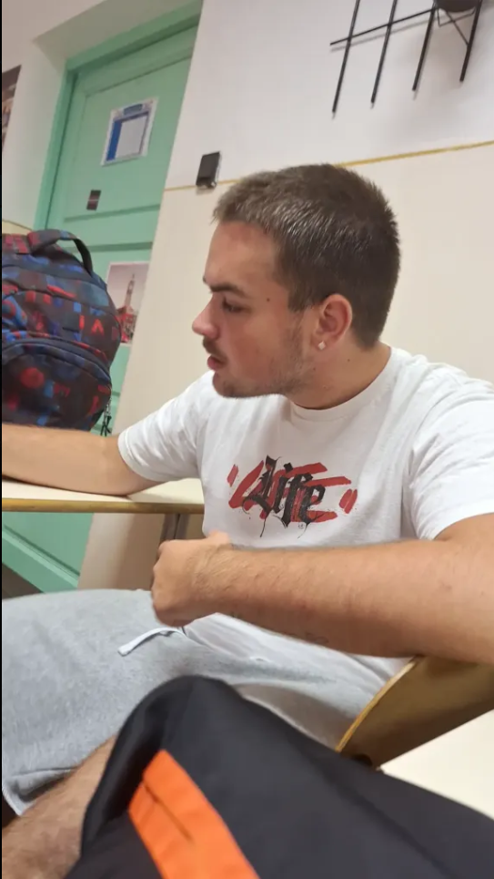

♛ ÜDV A KIRÁLYSÁGBAN ♛
THE BOSS
GÖRÖMBEI ROLAND
ALIAS YUNG GÖRI 👑

NA CSÁÓ, TESÓK! 🔥
Sziasztok, Görömbei Roland vagyok, a „BOSS”, vagy ahogy többen ismerhettek, Yung Göri! 😎👑
Na csáó, tesók, megjött a király, lehet igazodni! ♛ Nálam a stílus alap, a duma nagy, a kisugárzás meg aranyból van. Nem kell nekem bemutatkozni kétszer, mert ahol megjelenek, ott már tudják, hogy megérkezett a BOSS!
Autóba ne engedjetek, mert nagyon veszélyes vagyok, 30-as táblánál 120-szal megyek, mert BOSS vagyok! 😂🏎️ Na jó, tesók, ezt inkább csak nagy dumának vegyétek, az utakon azért észnél kell lenni!
Imádom a töriórákat Alter miatt. 🤣📚 Ha Alter órát tart, tesó, ott aztán van élet! Nem mondom, hogy én vagyok a történelem professzora, de a hangulatért felelek, az biztos. Ha beindul a műsor, még a tankönyv is felébred!
A zenét adom, a jó társaságot adom, a családomért meg bármikor kiállok. Nekem a tesók, a család meg a tisztelet az első. Lehet nagy a duma, lehet nagy a stílus, de az embernek a szíve is legyen a helyén!
Én nem másolok senkit, tesó, nekem saját stílusom van. Arany a kisugárzás, korona a fejemen, BOSS-mód bekapcsolva. 😎🔥